def f(x):
return 3*(x**2) - 4*x + 5
f(4.0)37.0Let’s create a function and intuitively try to understand the derivate. We need to figure out intuitive sense of what derivatives tells us about the function.
def f(x):
return 3*(x**2) - 4*x + 5
f(4.0)37.0xs = np.arange(-5, 5, 0.25); xs
ys = f(xs); ys
plt.plot(xs, ys)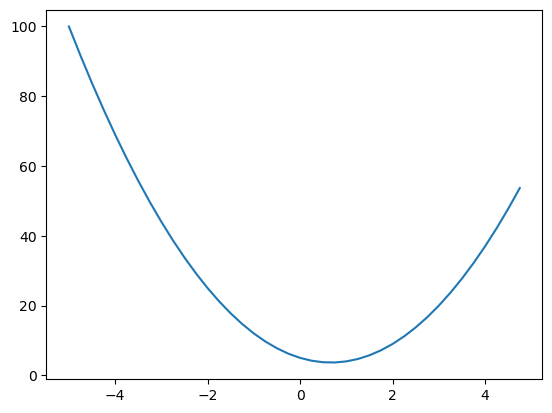
What’s the derivative of function at the value 2. Looking at the plot we can see at x=2 if we nudge the function slightly it will increase. This implies derivative of function at 2 will be positive ( causing the function to increase). Similarily at -2 a slight increase in the value will cause the function to decrease. This intuitively indicates the derivative at -2 will be zero. Let’s find out how it goes
h = 0.0000000000000000000000000000001 # A really small number
x1 = 2.0
y1 = f(x1); y1
x2 = x1+h
y2 = f(x2); y2
print(f"Approximate value of Derivative {(y2 -y1)/h}")Approximate value of Derivative 0.0Please note above procedure only calculates approximate numerical value of the derivate. Additionally, because of floating point rules we can’t continuosly keep on decreasing the value of h. At some point it will give wrong answer
h = 0.01
a = 2.0
b = -3.0
c = 10.0
d = a*b+c; d4.0If we slightly nudge a. What will happen?
Let’s find out
h = 0.01
a = 2.0
b = -3.0
c = 10.0
a = a+ h
d1 = a*b+c; d13.9700000000000006print(f"Approximate value of Derivative w.r.t a {(d1-d)/h}")Approximate value of Derivative w.r.t a -2.999999999999936h = 0.01
a = 2.0
b = -3.0
c = 10.0
b = b+ h
d1 = a*b+c; d14.02print(f"Approximate value of Derivative w.r.t to b {(d1-d)/h}")Approximate value of Derivative w.r.t to b 1.9999999999999574Neural networks are big mathematical expressions. We need a Data Structure to hold such expressions together. We will define a Value object for the same with following properties
Value (data, children=(), op=None, label='')
Class to hold a scalar number in an object, references of input values/ computational graph for expression. Supports arthmetic operations like addition, multiplications etc…
a = Value(2.0, label="a")
b = Value(-3.0, label="b")
c = Value(10.0, label="c")
d = a*b; d.label = "d"
e = d+c; e.label = "e"
f = Value(-2.0, label="f")
L = e*f; L.label="L"
LValue(L|data=-8.0)d._prev, d._op, d.label({Value(a|data=2.0), Value(b|data=-3.0)}, '*', 'd')draw_dot(L)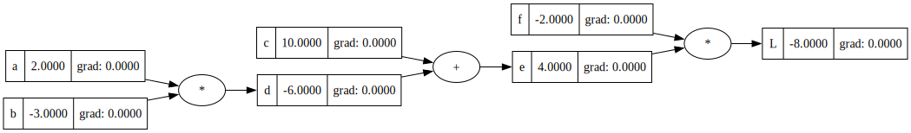
We need to calculate derivative of L w.r.t all the intermediate variable
Inline gradient check. Deriving all the gradient using backpropogation steps, then numerical gradient is only estimating it using small step size.
def lol():
"""Function for inline gradient checking"""
h = Value(0.001)
a = Value(2.0, label="a")
b = Value(-3.0, label="b")
c = Value(10.0, label="c")
d = a*b; d.label = "d"
e = d+c; e.label = "e"
f = Value(-2.0, label="f")
L1 = e*f; L1.label="L"
a = Value(2.0, label="a")
a += h
b = Value(-3.0, label="b")
# b += h
c = Value(10.0, label="c")
# c += h
d = a*b; d.label = "d"
# d += h
e = d+c; e.label = "e"
# e += h
f = Value(-2.0, label="f")
# f +=h
L2 = e*f; L2.label="L"
# L2 += h
return (L2 - L1)/h
lol()Value(data=6.000000000000227)L.grad = 1.0
f.grad = 4.0
e.grad = -2.0
d.grad = -2.0 # dL/de*de/dd
c.grad = -2.0
b.grad = -4.0 # dL/de*de/dd*dd/db
a.grad = 6.0
draw_dot(L)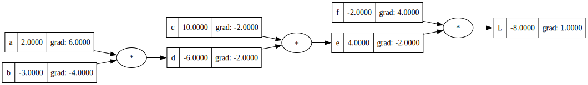
Addition operation acts like a routing or distributing operation for the gradient
Local derivative of the sum is same as gradient of the parent . Local node knows about the local influence
Multiplication operation inverts with gradient on same level before multiplying with the next in line gradient
We can imagine gradient to be flowing backward through the graph and a plus node will just distribute it to parent nodes or routes the gradient as local derivative on the plus nodes are just 1.0
Output produced some operation
Pointer to the nodes/ children of the operation/
Manual Backpropogation
Go through recursively and multiply on the derivative => Back propogation
So one definition of backpropogation could be - Recursive application of chain rule, applied backwards through the computation graph
Sidenote to fix terminal launching with vscode and terminal app on mac - “sudo sysctl -w kern.tty.ptmx_max=768”
a = Value(2.0, label="a")
b = Value(-3.0, label="b")
c = Value(10.0, label="c")
d = a*b; d.label = "d"
e = d+c; e.label = "e"
f = Value(-2.0, label="f")
L = e*f; L.label="L"
draw_dot(L)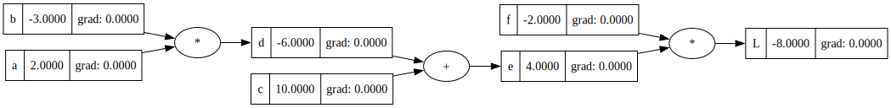
s = L._prev
# a = list(L._prev)
# a[0]
# a[1]def backprop_m(root):
children = list(root._prev)
for i, elem in enumerate(children):
if root._op == "+":
# print(elem, "+")
elem.grad = root.grad
backprop_m(elem)
elif root._op == "*":
# print(elem, "*")
if i == 0:
elem.grad = root.grad*children[1].data
backprop_m(elem)
else:
elem.grad = root.grad*children[0].data
backprop_m(elem)
elif root._op == "tanh":
''' Derivative of tanh is 1- tanh(x)^2 as defined [here](https://socratic.org/questions/what-is-the-derivative-of-tanh-x)'''
elem.grad = 1- root.data**2
backprop_m(elem)
else:
print("op not defined")
L.grad = 1.0
backprop_m(L)
draw_dot(L)a, b
a.data // b.data
a // bValue(data=-1.0)Objective is to nudge our inputs slightly to make L go up.
a = Value(2.0, label="a")
b = Value(-3.0, label="b")
c = Value(10.0, label="c")
f = Value(-2.0, label="f")
d = a*b; d.label = "d"
e = d+c; e.label = "e"
L = e*f; L.label="L"
L.grad = 1.0
backprop_m(L)
draw_dot(L)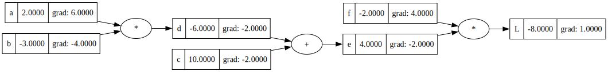
step_size = 0.01
a.data += step_size*a.grad
b.data += step_size*b.grad
c.data += step_size*c.grad
f.data += step_size*f.grad
# Rerunning forward pass
d_grad = d.grad
d = a*b; d.label = "d"
d.grad = d_grad
e_grad = e.grad
e = d+c; e.label = "e"
e.grad = e_grad
L_grad = L.grad
L = e*f; L.label="L"
L.grad = L_grad
draw_dot(L)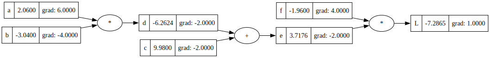
Some things to ponder
xs = np.arange(-5, 5, 0.2)
ys = np.tanh(xs)
plt.plot(xs, ys)
plt.grid(True)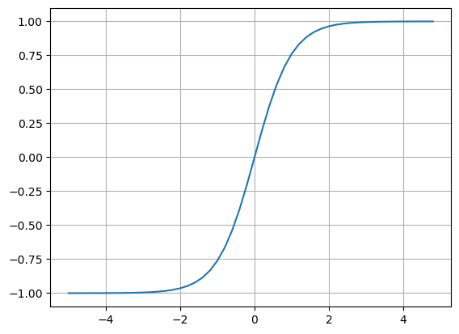

#Inputs x1, x2
x0 = Value(2.0, label="x0")
x1 = Value(0.0, label="x1")
# x2 = Value(-2.0, label="x2")
# Weights w1,w2
w0 = Value(-3.0, label="w0")
w1 = Value(1.0, label="w1")
# w2 = Value(1.0, label="w2")
# Bias of the neuron . A weird value is chosen here to make derivative values good
b = Value(6.881375870195432, label="b")
w0x0 = w0*x0; w0x0.label = "w0x0"
w1x1 = w1*x1; w1x1.label = "w1x1"
# w2x2 = w2*x2; w2x2.label = "w2x2"
w0x0w1x1 = w0x0+w1x1; w0x0w1x1.label = 'w0x0w1x1'
n = w0x0w1x1+b; n.label = "n"
o = n.tanh(); o.label = "o"
draw_dot(o)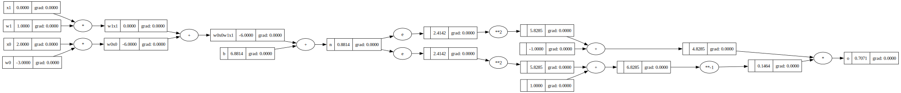
o.grad = 1.0
backprop_m(o)
draw_dot(o)op not defined
op not definedFor x1 == 0 , it will weights w1 will have no influence on final output as intuitively anything multiplied by zero will always give zero. Hence gradient of w1 is zero.
def lol():
"""Function for inline gradient checking"""
h = Value(0.001)
#Inputs x1, x2
x0 = Value(2.0, label="x0")
x1 = Value(0.0, label="x1")
# x2 = Value(-2.0, label="x2")
# Weights w1,w2
w0 = Value(-3.0, label="w0")
w1 = Value(1.0, label="w1")
# w2 = Value(1.0, label="w2")
# Bias of the neuron . A weird value is chosen here to make derivative values good
b = Value(6.881375870195432, label="b")
w0x0 = w0*x0; w0x0.label = "w0x0"
w1x1 = w1*x1; w1x1.label = "w1x1"
# w2x2 = w2*x2; w2x2.label = "w2x2"
w0x0w1x1 = w0x0+w1x1; w0x0w1x1.label = 'w0x0w1x1'
n = w0x0w1x1+b; n.label = "n"
L1 = n.tanh(); L1.label="L"
x0 = Value(2.0, label="x0")
# x0 += h
x1 = Value(0.0, label="x1")
# x1 +=h
# x2 = Value(-2.0, label="x2")
# Weights w1,w2
w0 = Value(-3.0, label="w0")
w0 += h
w1 = Value(1.0, label="w1")
# w2 = Value(1.0, label="w2")
# Bias of the neuron . A weird value is chosen here to make derivative values good
b = Value(6.881375870195432, label="b")
# b += h
w0x0 = w0*x0; w0x0.label = "w0x0"
w1x1 = w1*x1; w1x1.label = "w1x1"
# w2x2 = w2*x2; w2x2.label = "w2x2"
w0x0w1x1 = w0x0+w1x1; w0x0w1x1.label = 'w0x0w1x1'
n = w0x0w1x1+b; n.label = "n"
# n += h
L2 = n.tanh(); L2.label="L"
# L2 += h
return (L2 - L1)/h
lol()Value(data=0.9985832274369555)We implement an algoritm after implementing how local derivative are linked to out node and implementing the same in Value class
x0 = Value(2.0, label="x0")
x1 = Value(0.0, label="x1")
# x2 = Value(-2.0, label="x2")
# Weights w1,w2
w0 = Value(-3.0, label="w0")
w1 = Value(1.0, label="w1")
# w2 = Value(1.0, label="w2")
# Bias of the neuron . A weird value is chosen here to make derivative values good
b = Value(6.881375870195432, label="b")
w0x0 = w0*x0; w0x0.label = "w0x0"
w1x1 = w1*x1; w1x1.label = "w1x1"
# w2x2 = w2*x2; w2x2.label = "w2x2"
w0x0w1x1 = w0x0+w1x1; w0x0w1x1.label = 'w0x0w1x1'
n = w0x0w1x1+b; n.label = "n"
o = n.tanh(); o.label="o"
draw_dot(o)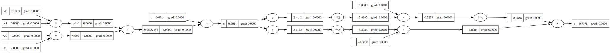
o.grad = 1.0
o._backward()
draw_dot(o)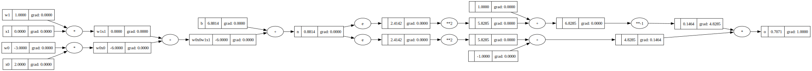
n._backward()
draw_dot(o)
b._backward()
draw_dot(o)w0x0w1x1._backward()
draw_dot(o)
w1x1._backward()
w0x0._backward()
draw_dot(o)
Below is my implementation of backprop leveraging backward
backprop_r (root)
*Backpropogation leveraging the _backward method in graph*
x0 = Value(2.0, label="x0")
x1 = Value(0.0, label="x1")
# x2 = Value(-2.0, label="x2")
# Weights w1,w2
w0 = Value(-3.0, label="w0")
w1 = Value(1.0, label="w1")
# w2 = Value(1.0, label="w2")
# Bias of the neuron . A weird value is chosen here to make derivative values good
b = Value(6.881375870195432, label="b")
w0x0 = w0*x0; w0x0.label = "w0x0"
w1x1 = w1*x1; w1x1.label = "w1x1"
# w2x2 = w2*x2; w2x2.label = "w2x2"
w0x0w1x1 = w0x0+w1x1; w0x0w1x1.label = 'w0x0w1x1'
n = w0x0w1x1+b; n.label = "n"
o = n.tanh(); o.label="o"
draw_dot(o)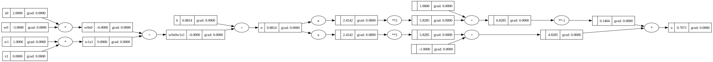
o.grad=1.0
backprop_r(o)
draw_dot(o)
Some comments and intuitions
topo_sort (o)
def topo_sort(o):
topo = []
visited = set()
def build_topo(v):
if v not in visited:
visited.add(v)
for child in v._prev:
build_topo(child)
topo.append(v)
build_topo(o)
return topo, visitedIn the implementation of topo_sort. A node only adds itself once to the topo list after all it’s children are added. That guarantees invariance is maintained.
topo_sort(o)([Value(x1|data=0.0),
Value(w1|data=1.0),
Value(w1x1|data=0.0),
Value(x0|data=2.0),
Value(w0|data=-3.0),
Value(w0x0|data=-6.0),
Value(w0x0w1x1|data=-6.0),
Value(b|data=6.881375870195432),
Value(n|data=0.8813758701954324),
Value(data=2.414219074453585),
Value(data=5.828453739455526),
Value(data=-1),
Value(data=4.828453739455526),
Value(data=2.414219074453585),
Value(data=5.828453739455526),
Value(data=1),
Value(data=6.828453739455526),
Value(data=0.1464460386136754),
Value(o|data=0.7071079227726492)],
{Value(b|data=6.881375870195432),
Value(data=-1),
Value(data=0.1464460386136754),
Value(data=1),
Value(data=2.414219074453585),
Value(data=2.414219074453585),
Value(data=4.828453739455526),
Value(data=5.828453739455526),
Value(data=5.828453739455526),
Value(data=6.828453739455526),
Value(n|data=0.8813758701954324),
Value(o|data=0.7071079227726492),
Value(w0x0w1x1|data=-6.0),
Value(w0x0|data=-6.0),
Value(w0|data=-3.0),
Value(w1x1|data=0.0),
Value(w1|data=1.0),
Value(x0|data=2.0),
Value(x1|data=0.0)})topo_sort(n)([Value(x1|data=0.0),
Value(w1|data=1.0),
Value(w1x1|data=0.0),
Value(x0|data=2.0),
Value(w0|data=-3.0),
Value(w0x0|data=-6.0),
Value(w0x0w1x1|data=-6.0),
Value(b|data=6.881375870195432),
Value(n|data=0.8813758701954324)],
{Value(b|data=6.881375870195432),
Value(n|data=0.8813758701954324),
Value(w0x0w1x1|data=-6.0),
Value(w0x0|data=-6.0),
Value(w0|data=-3.0),
Value(w1x1|data=0.0),
Value(w1|data=1.0),
Value(x0|data=2.0),
Value(x1|data=0.0)})Back prop implementation below needs to be added to the Value class
o.grad = 1.0
topo, _ = topo_sort(o)
for node in reversed(topo):
node._backward()
draw_dot(o)
# topo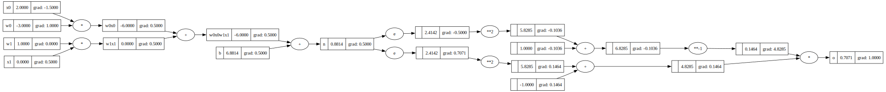
draw_dot(o)o.backward()draw_dot(o)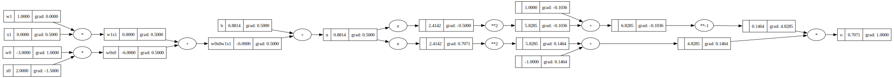
a = Value(2, label='a')
b = a+a; b.label = 'b'
# draw_dot(b)
SVG("cell-44-output-1.svg")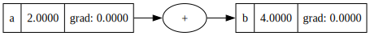
b.backward()
# draw_dot(b)
SVG("cell-45-output-1.svg")draw_dot(b)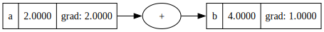
Gradient here should be 2 but the way Value implementation and Value.__add__ is done we can’t account for this [ We go twice to self and overwrite gradient to 1 here with addition routing]
Signature: Value.__add__(self, other)
Source:
def __add__(self, other):
'''Protocol to add 2 value objects'''
out = Value(self.data + other.data, children=(self, other), op="+")
# Code for chaining back propogation operation
def _backward():
'''Todo Job is to take out grad and propogate to self and other'''
self.grad = 1.0*out.grad
other.grad = 1.0*out.grad
out._backward = _backward
return outA similar issue can be much more prominently seen in following example
a = Value(-2.0, label='a')
b = Value(3.0, label='b')
d = a*b; d.label ='d'
e = a+b; e.label ='e'
f = d*e; f.label ='f'
f.backward()
# draw_dot(f)
SVG("cell-46-output-1.svg")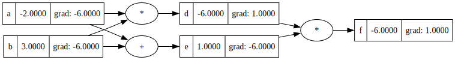
Fix of this is to accumulate gradient, with initialization of grad=0; it will work
draw_dot(f)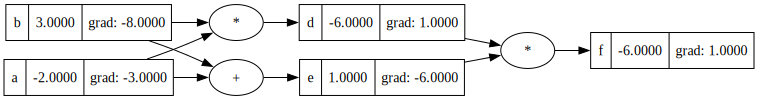
a = Value(2.0, label='a')
-aValue(data=-2.0)b = Value(3.0, label='b')
a - bValue(data=-1.0)a + 1Value(data=3.0)1+a # implement __radd__Value(data=3.0)a*1Value(data=2.0)1*a # implement __rmul__Value(data=2.0)# a**4
a**2, b(Value(data=4.0), Value(b|data=3.0))a = Value(2.0, label='a')
t = a**(-1); t.label="t"
t.backward()
draw_dot(t)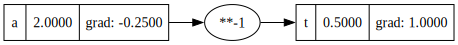
#### Internal Gradient Check
def lol():
h = Value(0.01)
a = Value(2, label='a')
b1 = a**-1; b1.label='b1'
a += h
b2 = a**-1; b2.label='b2'
return (b2-b1)/h
lol()Value(data=-0.24875621890546595)a = Value(2.0, label='a')
b = Value(4.0, label='b')
c = a/b; c.label='c'
c.backward()
draw_dot(c)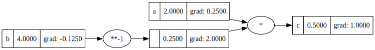
def lol():
h = 0.01
a = Value(2.0, label='a')
b = Value(4.0, label='b')
c1 = a/b; c1.label='c1'
# a += h
b += h
c2 = a/b; c2.label='c2'
return (c2-c1)/h
lol()Value(data=-0.12468827930174342)a = Value(1.0, label='a')
b = a.exp(); b.label='b'
c = b**2
c.backward()
draw_dot(c)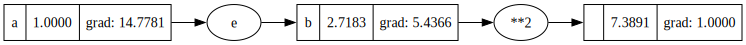
def lol():
h = 0.01
a = Value(1.0, label='a')
b = a.exp(); b.label='b'
c1 = b**2; c1.label='c1'
a += h
b = a.exp(); b.label='b'
c2 = b**2; c2.label='c2'
return (c2-c1)/h
lol()Value(data=14.926883473127184)x0 = Value(2.0, label="x0")
x1 = Value(0.0, label="x1")
# x2 = Value(-2.0, label="x2")
# Weights w1,w2
w0 = Value(-3.0, label="w0")
w1 = Value(1.0, label="w1")
# w2 = Value(1.0, label="w2")
# Bias of the neuron . A weird value is chosen here to make derivative values good
b = Value(6.881375870195432, label="b")
w0x0 = w0*x0; w0x0.label = "w0x0"
w1x1 = w1*x1; w1x1.label = "w1x1"
# w2x2 = w2*x2; w2x2.label = "w2x2"
w0x0w1x1 = w0x0+w1x1; w0x0w1x1.label = 'w0x0w1x1'
n = w0x0w1x1+b; n.label = "n"
o = n.tanh(); o.label="o"
draw_dot(o)o.backward()
draw_dot(o)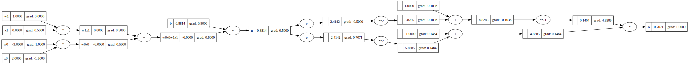
x = math.log(2)
math.exp(x)/(1+math.exp(x))0.6666666666666666a = Value(0.0, label='a')
b = a.sigmoid(); b.label='b'
b.backward()
draw_dot(b)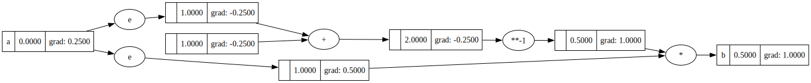
a = Value(1.0, label='a')
b = a.relu(); b.label='b'
b.backward()
draw_dot(b)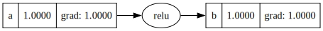
a = Value(0.0, label='a')
b = a.relu(); b.label='b'
b.backward()
draw_dot(b)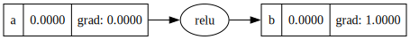
a = Value(2.0, label='a')
b = 1.0
b - aValue(data=-1.0)a - bValue(data=1.0)